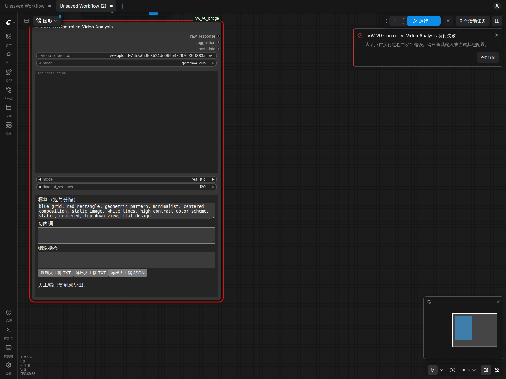

V0-S2 · 人工验收材料
完整机器验收 9/9 通过；人工尚未签署。
独立 Stage 审查已通过：Fatal 0 / Major 0 / Minor 0；等待你的体验签署。
产品候选 719c74559393a6489b2f630a1e0d3bc3303eb655
真实运行 full-v0-auto-08 · 五次完整依赖快照 · 每次 97,078 文件 / 15,810,055,916 字节
这次交付范围
在 ComfyUI 原生工作流内完成最简短视频反推、机器建议与人工稿分离、显式采纳、编辑与导出，以及取消、故障和离线人工操作。既有独立单图前端仍属于已签 R1a；独立视频前端不在本次 S2 交付范围内。
热图 P959.422 秒10 次，门限 ≤180 秒
四帧热视频 P9524.500 秒10 次，门限 ≤300 秒
热测 GPU 峰值21470 MiB门限 <23552 MiB
热测可用 RAM 最低7443 MiB门限 ≥2048 MiB
本轮实际机器建议与采纳导出
下列文本直接取自浏览器真实采纳导出，没有人工润色或补译。此处使用结构验收片段，不能替代 S3 的独立内容质量集。中文本次为空，图像与视频 Prompt 同句也如实保留。
自然中文
（本次结果为空，保留为空）
自然英文
A high-contrast image featuring a solid red rectangle centered within a dark blue grid pattern defined by thin white lines.
图像 Prompt
A high-contrast image featuring a solid red rectangle centered within a dark blue grid pattern defined by thin white lines.
视频 Prompt
A high-contrast image featuring a solid red rectangle centered within a dark blue grid pattern defined by thin white lines.
标签
blue grid, red rectangle, geometric pattern, minimalist, centered composition, static image, white lines, high contrast color scheme, static, centered, top-down view, flat design
负向提示词
（本次结果为空，保留为空）
取消及模型离线后的人工稿
这是本轮浏览器实际编辑的文字。取消后与模型离线后的导出逐字段一致：
人工修改：等待采纳时保留，不被新运行或取消覆盖；请求期间继续编辑
查看原生工作台真实截图（故障注入后的状态）
截图中的红色错误提示来自测试刻意停止本轮 Ollama，是故障验证的预期状态；人工稿和导出仍保留。截图未裁剪或隐藏错误提示。

完整固定九项
| 用例 | 义务 | 机器结果 |
|---|
| V0-A01 | 图片真实输入 | PASS |
| V0-A02 | 短视频有限抽帧 | PASS |
| V0-A03 | 四输出与复用 | PASS |
| V0-A04 | 人工编辑与导出 | PASS |
| V0-A05 | 异常不覆盖人工稿 | PASS |
| V0-A07 | 文件边界与安全 | PASS |
| V0-A08 | 离线人工路径 | PASS |
| V0-A09 | 资源与热性能 | PASS |
| V0-A10 | 取消及物理释放 | PASS |
边界与后续
- 本阶段不是完整 V0.2、V1 或生产发布签署。
- S3 的增量安装、回滚、断网迁移及独立图片/视频质量集尚未完成。
- 本轮媒体及服务均在隔离目录执行，当前服务、浏览器与临时根已清理；本报告是可双击查看的静态证据，不会启动模型。
- 独审复算原始时间、来源和帧 hash 对照，不冒充新一轮逐像素解码；冻结验收的真实 decoder 与 FFmpeg 结构对照另有原始证据。
查看原始交付
完整独立审查与覆盖边界 · 门禁裁决 · 人工签署请求
人工签署
只有你能确认体验和范围；本页面及机器收据不会代签。独立审查通过并检查本材料后，可使用下面的候选绑定文本：
批准 V0-S2 人工体验签署，候选 719c74559393a6489b2f630a1e0d3bc3303eb655；确认当前 ComfyUI 最简短视频、显式采纳、取消与离线人工工作流满足本阶段目标，并接受验收材料列明的范围及非阻断限制。该签署不批准 V0.2、完整 V1 或生产发布。
人工验收通过后立即提交签署记录并推送 Git；此时尚未完成该步骤。